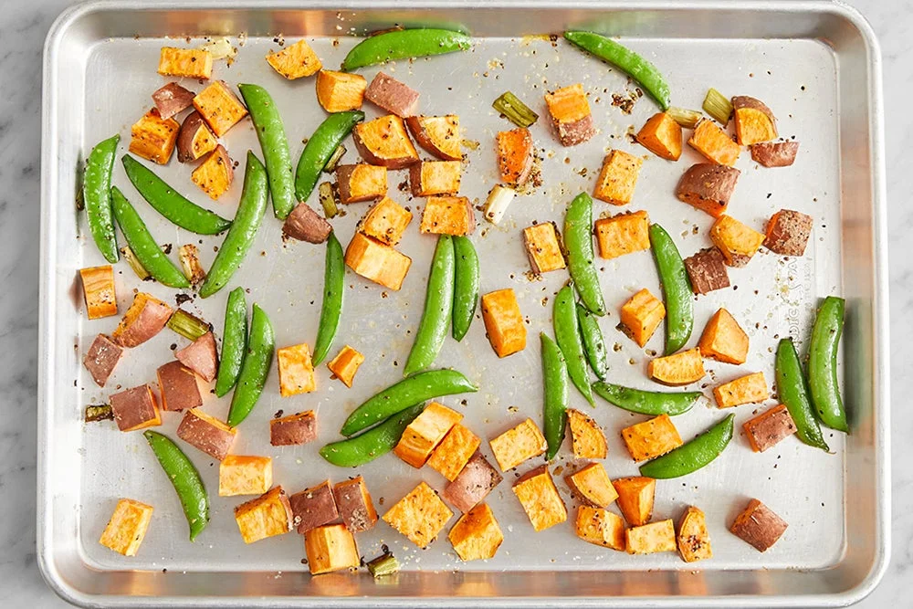

Salmon coated with a flavorful mix of spicy yellow curry paste and creamy
mayonnaise, then topped with a sprinkle of airy panko breadcrumbs to
achieve a crispy crust in the oven.
A duo of roasted sweet potatoes and sugar snap peas (finished with bright
ponzu) rounds out the dish.
Prep time: 40 minutes
2 servings
740 calories
Ingredients
2 Skin-on salmon fillets
1 lb Sweet potatoes
2 Scallions
1 Lime
4 oz Sugar snap peas
2 Tbsp Mayonnaise
1 Tbsp Yellow curry paste
1 Tbsp Sugar
1 Tbsp Ponzu sauce
¼ cup Panko breadcrumbs
Steps:
Prepare the ingredients & make the dressing:
Arrange two oven racks in the upper and lower thirds of the oven, then
preheat to 450°F.
Wash and dry the fresh produce.
Medium dice the sweet potatoes.
Cut the white bottoms of the scallions into 1-inch
pieces; thinly slice the hollow green tops.
Pull off and discard the tough string that runs the length of each
snap pea pod. Place in a bowl. Drizzle with
olive oil and season with
salt and pepper. Stir to coat.
In a bowl, whisk together the curry paste and
mayonnaise. Season with
salt and pepper.
To make the dressing, halve the lime crosswise;
squeeze the juice into a large bowl. Add the
ponzu sauce and sugar; whisk until
the sugar has dissolved.
Roast the vegetables:
Place the diced sweet potatoes and prepared white
bottoms of the scallions on a sheet pan. Drizzle with
olive oil and season with
salt and pepper; toss to coat. Arrange in an even
layer. Place on the lower oven rack and roast
20 minutes.
Leaving the oven on, remove from the oven. Carefully add the seasoned
peas in an even layer. Return to the oven and roast
2 to 3 minutes, or until the sweet potatoes are
tender when pierced with a fork and the peas are bright green and
slightly softened. Remove from the oven.

Coat & roast the fish:
Meanwhile, place the fish on a separate sheet pan,
skin side down. Evenly top with the curry mayo, then
the breadcrumbs (pressing gently to adhere). Drizzle
with olive oil and season with
salt and pepper.
Place on the upper oven rack and roast, rotating the sheet pan halfway
through, 10 to 15 minutes, or until browned and
cooked through. Remove from the oven.
Dress the vegetables & serve your dish:
Add the roasted vegetables to the bowl of
dressing; toss to coat. Taste, then season with
salt and pepper if desired.
Serve the roasted fish with the dressed vegetables. Garnish the fish
with the sliced green tops of the scallions. Enjoy!